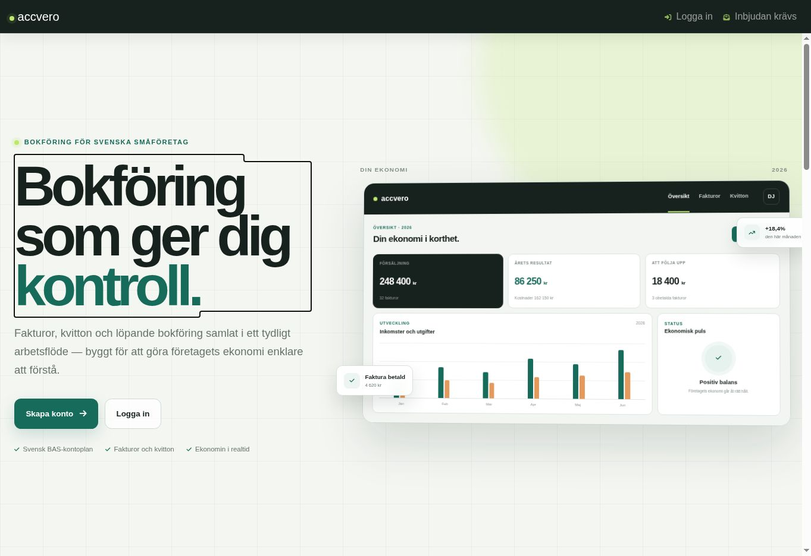
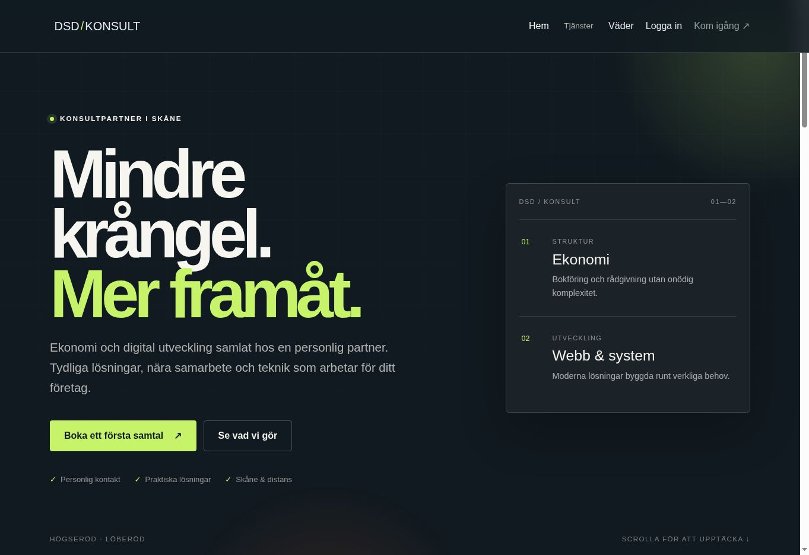
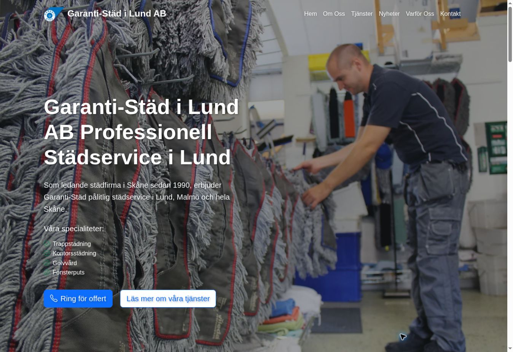

Open project ↗Accvero
A full-stack accounting application created as a capstone project. It brings together authentication, roles, dashboards, invoicing workflows and administration in one coherent product.
Visit Accvero ↗Automotive electronics × software
I’m Dariusz — an automotive electronics technician and self-taught software developer based in Sweden. I build practical web applications and business websites with a problem-first mindset.
Understand the system before changing it.
Turn real needs into useful software.
Test, learn and make the next version better.
Selected work
A selection of learning projects and real business websites. Each one helped me move beyond individual screens and think about the complete experience.

Open project ↗A full-stack accounting application created as a capstone project. It brings together authentication, roles, dashboards, invoicing workflows and administration in one coherent product.
Visit Accvero ↗
Open website ↗A business website combining a clear company presentation with account, administration and customer-facing features.
Visit website ↗
Open website ↗A modern website for an established cleaning company in Lund, designed to make services, trust signals and contact information easy to find.
Visit website ↗My journey
I started with automotive electronics, where every fault requires patience, logic and careful diagnosis.
Programming began as a curiosity and became another way to solve problems. I learned the front end first, then moved deeper into C#, .NET, databases, authentication and the structure behind complete applications.
I still approach software like a technician: understand what is happening, find the real cause and build something that works in practice.
Diagnosis, systems thinking and responsibility for real outcomes.
From first interfaces to applications connected to real data.
UX, application logic, access control, databases and deployment.
Get in touch
I’m always interested in practical software, automotive technology and the process of turning an idea into something real.
Send me an email ↗